第一章三點十七分
邱望是在黑板前面發現的。
那是高二的物理課，下午第六節，全班三十二個人有一半在打瞌睡。他正在講等速圓周運動，粉筆在黑板上畫了一個圓，畫到四分之三的時候，他聽到窗外的鳥叫聲停了。
不是變小，是停。像有人按了靜音。
他轉過頭。窗外有一隻麻雀，在空中。翅膀張開，不動。停在離窗戶大約兩公尺的地方，像一張貼在天空上的照片。
他看了三秒。然後他回頭看教室。
三十二個學生，一半趴著，一半坐著。坐著的那一半，眼睛睜著，看著黑板，不動。第三排那個永遠在轉筆的男生，筆在他的指尖上，斜的，停在半空中。窗邊的女生正在打哈欠，嘴巴張到一半。空氣中有粉筆灰，一粒一粒的，懸著，在窗戶照進來的光裡發亮。
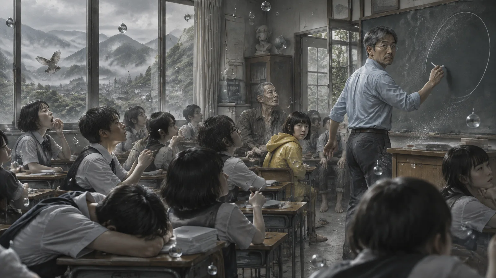
沒有聲音。
他叫了一個學生的名字。沒有人回答。他走下講台，走到第一排，伸手碰了一下一個學生的肩膀。肩膀是溫的，可是像石頭一樣硬——不是硬，是「不動」，他的手推不動它，像推一堵牆。
他站在教室中間。牆上的時鐘停在三點十七分。秒針在「四」和「五」之間。
他想，我在做夢。
他掐了自己的手臂。很痛。
他走出教室，走到走廊上。走廊上有一個學生，正在跑，一隻腳離地，另一隻腳的腳尖點著地板，身體往前傾——停在那裡。他繞過那個學生，走下樓梯，走到操場。
操場上有一場籃球賽。球在空中，離籃框大約一公尺，五個人仰著頭看它。
天空是灰的，好像快要下雨。他抬頭，看到雨已經開始下了——雨滴懸在空中，密密麻麻的，一顆一顆，像一整片玻璃珠。他伸出手，碰了一顆。它不動。他的手指穿過去的時候，它還是在那裡，濕的，冷的，可是不落下來。
他站在操場中央，在一片懸著的雨裡。
三點十七分。
第二章靜止的鎮
石岡坪是苗栗山裡的一個小鎮。
人口三千，一條主街，一間高中，一間國中，兩間國小，一座廟，一間便利商店，一間農會，一個菜市場。邱望在這裡住了十八年，從他二十七歲來這間高中教書開始。他的太太曉芸是這裡人，在農會上班。他們沒有小孩。他們住在鎮的東邊，一間兩層樓的老房子，房子後面有一片曉芸種的菜。
他走出學校，走到主街上。
街上有十幾個人。一個騎機車的男人，機車傾斜著，正在轉彎。一個提著菜籃的老太太，一隻腳踏在騎樓的台階上。便利商店的門開到一半，一個小孩在門裡，手裡拿著一根冰棒，冰棒的頂端有一滴水，懸著。
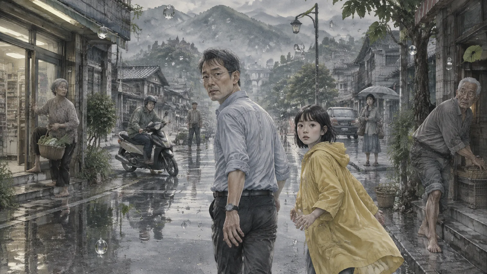
他一個一個走過去看。他認得他們。那個騎機車的是雜貨店的阿榮，那個老太太是廟口賣菜的阿嬌，那個小孩是他學生的弟弟。他站在他們面前，看著他們的臉，他們的眼睛是睜著的，可是不看他。他們在看三點十七分那一秒他們在看的東西。
他走到農會。
曉芸的位子是空的。她的電腦開著，螢幕上是一張表格，游標在一個格子裡，閃到一半——停在亮的那一瞬間。她的椅子往後推，包包不在。
她出去了。
他站在她的位子前面，忽然覺得很冷。他拿出手機，撥她的號碼。手機的螢幕亮了，可是撥號的聲音沒有出來。訊號是空的。他看著螢幕，螢幕上的時間：三點十七分。
他放下手機。
他走出農會，站在主街上，往東看，往西看。她會去哪裡？下午三點，她通常會去菜市場買晚上的菜，或者去廟口找阿嬌聊天，或者——
他忽然想起來。今天是星期三。星期三下午她會開車去隔壁鎮的診所拿她母親的藥。她三點出門，走山路，四點回來。
山路。
他開始跑。
第三章家
他沒有立刻去山路。
他跑到鎮的西邊，跑到山路的入口，然後他停下來，因為他想到一件事：如果她已經回來了呢？如果她今天沒有去，如果她母親的藥上星期已經拿了，如果她現在正在家裡，在後院，在廚房？
他往回跑。
家在鎮的東邊，兩層樓的老房子，門口有一棵桂花。桂花的花懸在半空中，有幾朵正在落，停在離地面三十公分的地方。他推開門。
客廳沒有人。廚房沒有人。爐子上有一鍋東西，是咖哩，鍋蓋掀開一半，冒出來的蒸氣停在空中，像一團白色的棉花。桌上有一張紙，是曉芸的字：
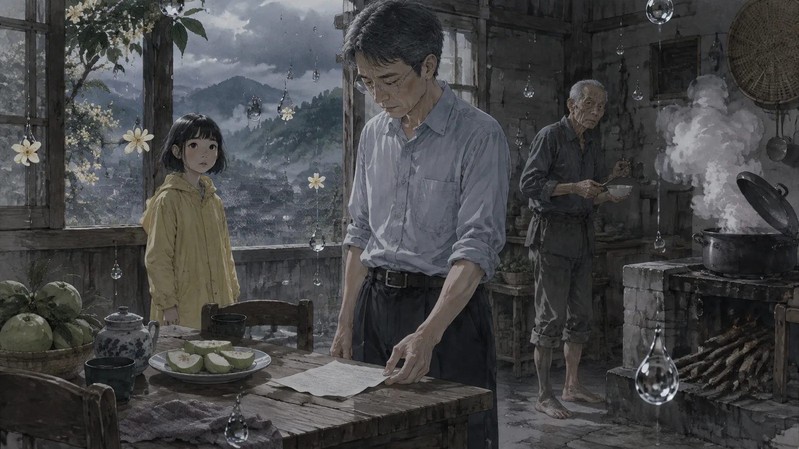
「去拿藥。回來煮咖哩。你先吃水果。」
旁邊放著一盤切好的芭樂。
他站在桌子前面，看著那張紙。她三點出門。三點十七分。她在路上。
他拿起一片芭樂，放進嘴裡。沒有味道。阿禾說得對——像吃空氣。他嚼了很久，吞下去，什麼都沒有。
他走上二樓。臥室。床是鋪好的，曉芸每天早上都鋪。床頭櫃上有她的眼鏡，一本翻到一半的書，一杯喝了一半的水。水面平的，一動也不動，杯子外面有幾滴水珠，懸著。
他在床上躺下來。
他躺了很久。他不累，可是他躺著。他看著天花板。天花板上有一片水漬，是去年颱風留下的，曉芸說要修，他說再看看，然後就沒有修。他看著那片水漬，看了很久。
然後他睡著了。
他做了一個夢。夢裡的東西是會動的。曉芸在廚房裡煮咖哩，蒸氣往上冒，她回過頭，說：「你回來了？」他說嗯。她說：「先吃水果。」他說好。就這樣。一個很普通的夢。
他醒過來的時候，天還是三點十七分的灰。蒸氣還懸在空中。
他下樓，走出門，往山路走。
這次他沒有跑。他走。因為他知道，不管他跑多快，那裡都是三點十七分。
✦
走到主街的時候，他繞進了便利商店。
不是為了買東西。是因為他想看看。
店裡有三個人。一個店員，站在收銀台後面，手裡拿著一個塑膠袋，正在打開。一個中年男人，站在飲料櫃前面，手伸進去，拿著一瓶茶。那個拿冰棒的小孩，在門口。
他走到貨架前面，拿了一個飯糰。包裝拆得開。他吃了。沒有味道。
他站在店裡，忽然覺得很奇怪。這是一間他來過幾百次的便利商店，他認得每一個貨架，認得那個店員——她是他三年前教過的學生，畢業以後沒有離開鎮上。他站在這裡，看著她的臉，她的眼睛看著塑膠袋，嘴角有一點點往上，可能是在想什麼好笑的事。三點十七分。她永遠在想那件好笑的事。
他忽然想，如果他不走。如果他永遠在這裡。
這間店永遠是三點十七分。她永遠在想那件好笑的事。那個男人永遠在拿那瓶茶。那個小孩的冰棒永遠不會融。沒有人會老，沒有人會死，沒有人會離開。石岡坪三千個人，永遠停在一個星期三的下午。
這聽起來不像地獄。這聽起來像一張照片。
他把飯糰的包裝放回貨架——一轉頭，它回到了他手裡。他把它放進口袋。
他走出去。
第四章阿禾
他走了兩公里，走到鎮的西邊，山路的入口，然後他停下來，因為他看到有東西在動。
在一個靜止的世界裡，有東西在動。
是一個小女孩。十二歲左右，穿一件黃色的雨衣，蹲在路邊的一個水窪旁邊。她在用一根樹枝撥水——不對，水不會動，她在撥懸在空中的雨滴，一顆一顆，把它們排成一排。她排得很專心，像在做一件很重要的事。
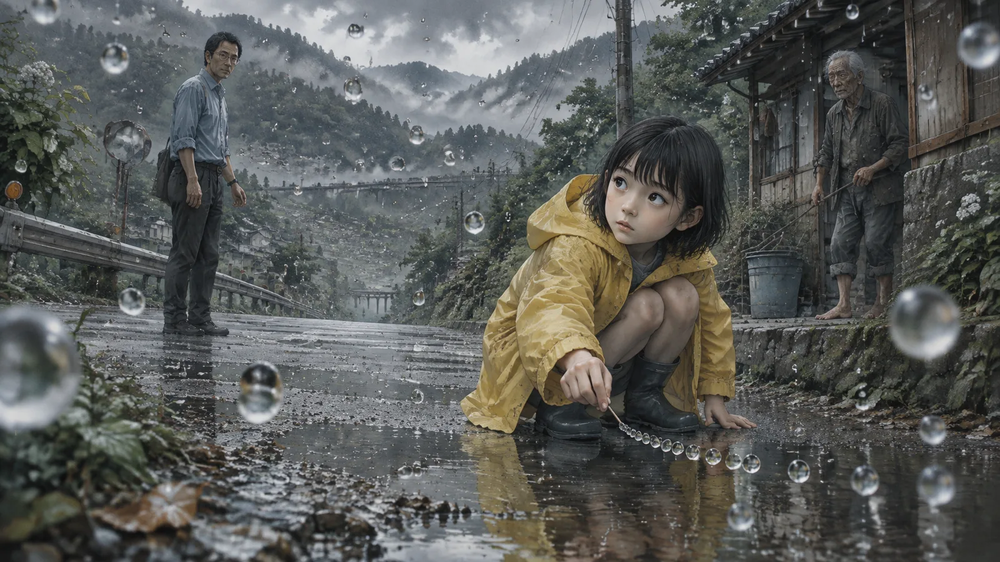
邱望站在十公尺外，看著她。他的心跳很快。
「妳——」
女孩抬起頭。她看到他，愣了一下，然後站起來，往後退了兩步。她的眼睛很大，很黑，看著他的方式很奇怪，像在看一個很久沒有看過的東西。
「妳會動。」邱望說。
女孩沒有回答。她看著他的嘴。
「妳會動，」他又說了一次，「妳是誰？」
女孩還是不回答。她把手舉起來，指了指自己的耳朵，搖了搖頭。
她聽不到。
邱望站在那裡，一時不知道該怎麼辦。他不會手語。他從口袋裡拿出手機——手機還能用，只是沒有訊號——打開記事本，打了一行字，舉起來給她看。
「妳叫什麼名字？」
女孩看了，走過來，從他手裡把手機拿過去，打了幾個字。
「阿禾。你是新來的？」
新來的。
邱望看著那三個字，看了很久。
「妳在這裡多久了？」
阿禾想了一下，打字。
「不知道。很久。時鐘不會動，我不會算。」
「妳一個人？」
「還有一個阿公。在山上。他不太下來。」
邱望蹲下來，跟她一樣高。
「這是什麼地方？」他打，「為什麼大家都不動？」
阿禾看著他，看了很久。然後她打了一行字，字很慢，一個一個打。
「他們不是不動。是你不動。」
第五章規則
阿禾帶他去她住的地方。
是路邊一間廢棄的土地公廟，很小，只有一個人可以躺的空間。裡面有一條毯子，幾個空的寶特瓶，一堆撿來的東西——石頭，樹枝，一個壞掉的手錶。廟裡沒有神像，只有一個香爐，香爐裡有三根香，燒到一半，香灰懸在空中。
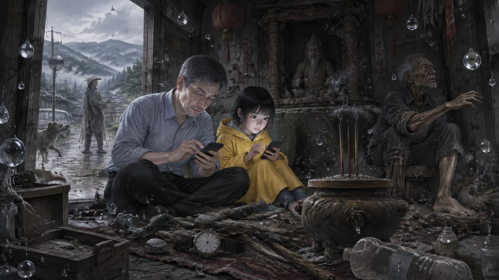
她在毯子上坐下來，拍拍旁邊的位子。邱望坐下來。
她用手機打字，他們一句一句地講。
阿禾說，她也不知道這是什麼地方。她只知道有一天，她在跑，然後所有的東西都停了。她以為是她做夢。她等了很久，等大家動起來，沒有。她餓了，去便利商店拿東西吃——東西拿得動，可是吃起來沒有味道，「像吃空氣」。她不會餓死，可是也不會飽。她不會累，可是可以睡。她睡著的時候會做夢，夢裡的東西是會動的。醒來，又不動了。
「那個阿公說，這裡有規則。」她打。
「什麼規則？」
「東西可以拿，可是不能改。」她指了指香爐裡懸著的香灰，「你可以把它撥掉，可是你一轉頭，它又回來了。你可以把人推倒，你一走開，他又站回去。什麼都一樣。你動的東西，只有你在看的時候是動的。」
邱望想起教室裡那個學生的肩膀。像推一堵牆。
「還有一個。」阿禾打，「時間不動，可是我們會走。走得越遠，就越難回來。」
「回來哪裡？」
阿禾看著他，沒有打字。她把手機還給他，站起來，走到廟門口，指了指路的方向——那條通往山上的路。
「阿公在上面。」她打，「他走太遠了。」
✦
那天晚上——沒有晚上，天一直是三點十七分的灰——邱望坐在廟門口，看著懸在空中的雨。
他在想那句話：他們不是不動。是你不動。
他是物理老師。他知道時間不是一個東西，是一種關係——一個東西相對於另一個東西的變化。如果所有東西都不變，那就沒有時間。如果只有你在變，那時間就只是你的。
所以不是世界停了。是他從世界裡掉出來了。
為什麼？
他想起三點十七分他在做什麼。畫圓。等速圓周運動。他想起窗外的鳥。他想起曉芸的空位子，想起星期三，想起山路。
他想起一件事。
三點出門，走山路，四點回來。三點十七分，她大概在山路的中段，那個很多彎的地方，那個去年出過車禍的地方。
他站起來。
阿禾在廟裡看著他。她沒有問他要去哪裡。她只是也站起來，穿上那件黃色的雨衣，跟在他後面。
第六章走遠
第二天——他們說那是第二天——邱望往山的另一邊走。
不是去山路。是去相反的方向，往東，往隔壁的鎮。他想知道這個「三點十七分」有多大。他想知道走出石岡坪以後，會不會有一個地方是三點十八分。
阿禾跟著他。她說阿公試過，可是她想再看一次。
他們走了一整天。經過農田，田裡有一個農夫，彎著腰，手裡拿著一把草。經過一條溪，溪水不流，水面像一片玻璃，玻璃下面有魚，停著。經過一座橋，橋上有一台機車，騎士的安全帽的帶子在風裡飄——停在飄的樣子。
走到隔壁鎮的時候，那裡也是三點十七分。
一間國小，操場上有孩子在跑，停著。一個菜市場，一個女人正在把錢遞給攤販，錢在兩個人的手之間。一台火車，停在平交道前面，車頭的燈亮著，車廂裡有幾十個人，臉貼著窗戶。
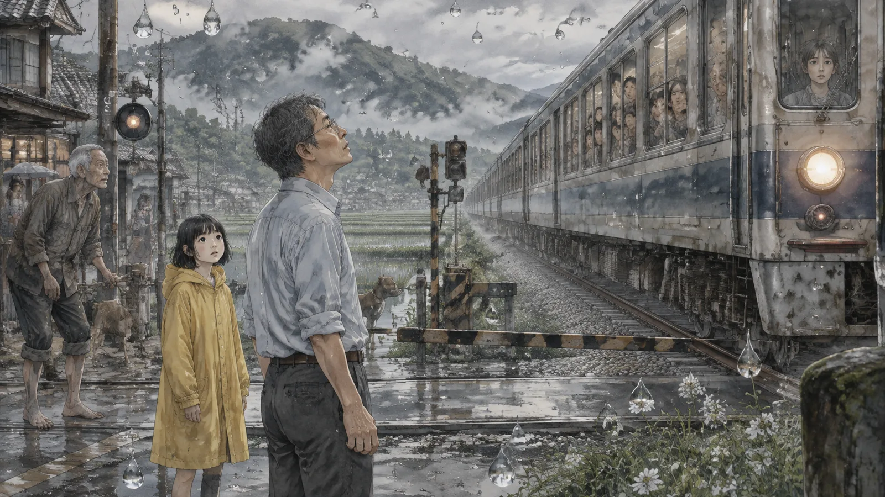
邱望站在火車旁邊，看著那些臉。
「他們也是三點十七分。」他說。
阿禾點點頭。她拿出手機打字。
「阿公走到台中。走到台北。走到海邊。都是。」
「全世界都是？」
「不知道。阿公說，可能不是全世界停了。是我們停了。我們走到哪裡，就把三點十七分帶到哪裡。」
邱望看著火車車廂裡的那些人。他想，他們不是停的。他們在動。他們正在從三點十七分走到三點十八分，只是他看不到。他是掉出來的那個人。他站在時間的外面，看著時間，時間看起來是停的。
像一張照片。照片裡的人不是不動。是照片不動。
「阿禾，」他說，「阿公說走得越遠，越難回來。是什麼意思？」
阿禾想了很久。
「他說，」她打，「你走得越遠，就越覺得這裡是真的。你會忘記那邊有一個三點十八分。你會覺得，這裡就是全部。」
她停了一下。
「他說他有一段時間，真的忘了。他在山上走，走了很多年，忘了他為什麼在這裡。他忘了阿明。他只是一直走。然後有一天他走回溪邊，看到阿明在水裡，他才想起來。」
「然後呢？」
「然後他就不走了。他說，忘記比記得更可怕。」
他們往回走。走了一整天。走回石岡坪的時候，主街上的阿榮還在轉彎，阿嬌還在踏台階，那個小孩還在拿冰棒。
邱望站在便利商店門口。他想起那間店，那個店員，那件好笑的事。他想，如果他再走幾年，他也會忘記。他會忘記曉芸在山路上，忘記那台貨車，忘記三點十八分。他會覺得這張照片就是全部。
他不要。
第七章山路
山路有十二公里。邱望走了兩個小時。
不是走，是跑，跑一段，走一段。阿禾跟在後面，不快不慢，像一個不會累的人。路上有幾台車，都停著——不是停在路邊，是停在路中間，開到一半，輪子轉到一半。有一台貨車，司機的手在方向盤上，嘴巴張著，像在講電話。有一台轎車，裡面是一對年輕人，女生的手在男生的臉旁邊，正要打他，或者正要摸他。
邱望一台一台地看。沒有曉芸的車。
走到第七公里的時候，他看到了。
不是車。是一個人。一個老人，站在路邊的護欄旁邊，往山下看。他在動——他的頭慢慢地轉過來，看著邱望和阿禾。他很老，八十幾歲，穿一件很舊的工作服，褲管捲到膝蓋，赤腳。
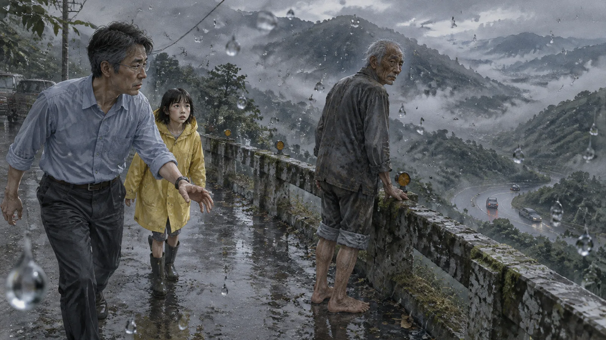
「新來的。」老人說。他的聲音很啞，像很久沒有講話。
「你是——」
「阿禾叫我阿公。我姓魏。」老人說，「你來找誰？」
邱望愣了一下。
「找我太太。」
老人點點頭，像早就知道。
「每個人都在找一個人。」他說，「阿禾找她媽。我找我兒子。你找你太太。」他轉過身，繼續看山下，「找到了，就麻煩了。」
「什麼意思？」
老人沒有回答。他往山下指了一下。
邱望走到護欄旁邊，往下看。
山路在下面繞了一個大彎，彎的最外側是一面很陡的坡，坡下面是溪。彎道上有兩台車。一台是曉芸的，白色的小車，車頭朝山下，在彎道的內側。另一台是貨車，藍色的，很大，載著石頭，在彎道的外側，車頭朝著曉芸的車。
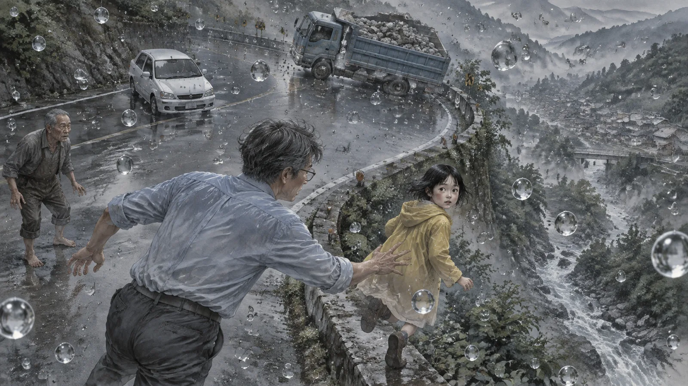
兩台車之間，大約三十公尺。
貨車的輪子是斜的。不是轉彎的斜，是打滑的斜。
邱望的手抓住了護欄。
「三點十七分，」老人說，「她的三點十七分。」
第八章推不動
他跑下去。
從護欄翻過去，滑下坡，摔了一次，膝蓋擦破了，爬起來繼續跑。他跑到彎道上，跑到曉芸的車旁邊，拉開車門。
她在裡面。
手在方向盤上，眼睛看著前面，看著那台貨車。她的臉是平靜的——不是不怕，是還沒來得及怕。三點十七分那一秒，她剛剛看到貨車，還沒有反應。她的嘴微微張開。她的右手正要從方向盤上抬起來，去按喇叭，或者去打方向盤，不知道。
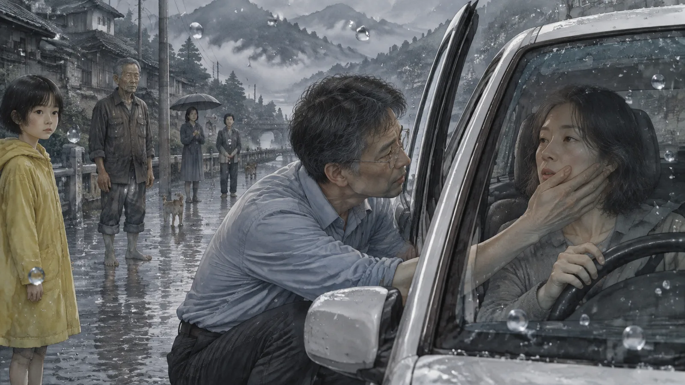
邱望把手放在她的臉上。溫的。
「曉芸。」
她不看他。她看著貨車。
他轉過身，看那台貨車。三十公尺。打滑。載著石頭。他是物理老師，他可以算——貨車的速度，重量，坡度，摩擦係數。他算了。他不想算，可是他的腦子自己算了。
三秒。時間動起來以後，三秒。
他跑到貨車旁邊。司機是一個年輕人，臉是白的，手死死抓著方向盤，腳在剎車上，剎車踩到底，可是輪子在滑。邱望拉開車門，把司機往旁邊推。
推不動。像推一堵牆。
他去推貨車。用肩膀，用背，用整個身體。貨車不動。他去搬石頭——貨車上的石頭，一顆一顆，他想把它們搬下來，讓貨車輕一點。他搬了一顆，很重，他抱著它走了三步，放在路邊。他回頭看貨車。
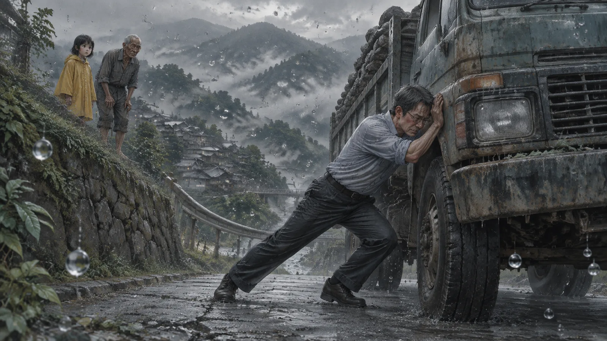
石頭在貨車上。
他搬下來的那一顆，在貨車上。路邊什麼都沒有。
他又搬了一次。一樣。
他跑回曉芸的車，想把她拉出來。她的安全帶扣著，他解不開——不是解不開，是解開了，一轉頭，它又扣回去。他想把車推走。推不動。他想把方向盤打向另一邊，打了，鬆手，它回來。
他站在兩台車中間，三十公尺的路上，喘著氣。
阿禾站在坡上看他。老魏站在她旁邊。
「不能改。」老魏說，「我試了五十年。」
第九章老魏
老魏的三點十七分，是一九七五年。
他坐在護欄旁邊，跟邱望講。阿禾在旁邊聽——她看著他的嘴，她會讀唇語，邱望後來才知道。
「那年我三十四歲。我兒子八歲。」老魏說，「我們在溪邊。他在玩水，我在旁邊抽菸。三點十七分，他滑了一跤，掉進深的地方。我看到他的頭在水裡浮了一下。」
他停了一下。
「然後所有東西都停了。」
「你就在這裡？五十年？」
「不知道幾年。不會算。可是很久。」老魏說，「一開始我跟你一樣，跑下去，想拉他。拉不動。我把他從水裡抱起來，一轉頭，他又在水裡。我做了幾千次。幾萬次。」
「後來呢？」
「後來我走遠了。」老魏說，「我走到山上，走到隔壁的鎮，走到更遠的地方。我想，如果我走得夠遠，也許時間會動。我走了很多年。可是走到哪裡都是三點十七分。我走回來，他還在水裡。」
他看著山下的溪。
「阿禾跟我說，這裡有規則。她是對的。可是她只知道一半。」老魏說，「規則是：你可以一直留在這裡。一直。只要你不讓它發生，它就不會發生。你的兒子永遠在水裡浮著，你的太太永遠在車裡看著貨車。他們不會死。可是他們也不會活。」
邱望看著他。
「那怎麼離開？」
老魏轉過頭。他的眼睛很老，可是很清楚。
「讓它發生。」他說。
第十章阿禾的三點十七分
阿禾的三點十七分是二〇〇九年八月八日。
她用手機打字告訴邱望的。那天晚上——還是灰的下午，可是他們說那是晚上——他們三個人坐在山路邊的一塊大石頭上。
「那天颱風。」阿禾打，「我跟媽媽在家。水進來了。媽媽抱著我往山上跑。跑到橋上，橋在搖。媽媽把我放下來，叫我先跑。我跑了三步，回頭看，橋斷了。媽媽在水裡。」
「然後就停了。」
「然後就停了。」
邱望看著她。十二歲。二〇〇九年，八八風災。那她現在應該——
「妳在這裡十幾年了。」
阿禾點點頭。
「可是妳還是十二歲。」
「這裡不會長大。」阿禾打，「阿公也不會變老。他是三十四歲的時候來的，可是他現在看起來八十歲。他說那不是變老，是走太遠了。走得越遠，看起來越老。」
邱望看著老魏。老魏坐在石頭的另一端，看著溪。
「妳有去看妳媽媽嗎？」
「每天。」阿禾打，「她在橋下面。水裡。她的臉朝上，眼睛是睜開的。她在看我。」
「妳有試過——」
「拉她上來？」阿禾打，「試過。跟阿公一樣。幾千次。」
她停下來，看著手機，很久。然後她打了一行字。
「我知道要怎麼離開。阿公跟我說過。讓它發生。可是我不要。」
「為什麼？」
「因為我一走，她就死了。」阿禾打，「現在她在水裡，可是她在看我。她的眼睛是睜開的。她還沒有死。只要我在這裡，她就還沒有死。」
她把手機放下，看著邱望。她的眼睛很大，很黑，十二歲的眼睛，可是裡面有十幾年。
邱望不知道要說什麼。他想起曉芸在車裡，手在方向盤上，嘴微微張開，看著貨車。她還沒有死。只要他在這裡，她就還沒有死。
他忽然明白老魏說的：找到了，就麻煩了。
第十一章五十年
老魏是在第三天走的。
不是走遠——是走了。
那天邱望在曉芸的車旁邊坐著。他每天都去，坐在她旁邊，跟她講話。她不會回答，可是他講。他講學校的事，講那隻懸在空中的麻雀，講阿禾，講老魏。他講他們十八年前第一次見面，在農會，她把他的表格退回來三次，因為他字寫太醜。他講他們的房子，房子後面的菜，她種的地瓜葉長太快了，他們吃不完。
他講了很多。講到後來他發現自己在講一些以前沒有講過的事——他有多怕她開山路，他每個星期三下午都心不在焉，他從來沒有跟她說。
老魏走過來的時候，他正在講這個。
老魏站在車旁邊，看著曉芸，看了很久。
「她很漂亮。」他說。
「嗯。」
「我兒子也很漂亮。八歲的小孩，都很漂亮。」老魏說。他在路邊坐下來，靠著車，「我今天去看他了。他在水裡，頭浮著，眼睛看著我。五十年了。他八歲。」
邱望等著。
「我想通了一件事。」老魏說，「我一直以為我留在這裡是為了他。不讓他死。可是他不是活的。他是停的。停在最壞的那一秒。他這五十年，什麼都沒有，就是那一秒。溺水的那一秒。我讓他在那一秒裡待了五十年。」
他的聲音在抖。
「那不是救他。那是不放他走。」
邱望沒有說話。
「我要走了。」老魏說，「我要去溪邊，讓它發生。他會死。我知道。可是他會死完。他不會一直在死。」
他站起來。他看著邱望，看了很久。
「你自己決定。」他說，「不要聽我的。我的五十年，不是你的。」
然後他往山下走。
邱望跟著他，走到溪邊。阿禾也來了。老魏站在溪邊，看著水裡那個八歲的孩子，看了很久很久。然後他走進水裡，走到孩子旁邊，跪下來，把手放在孩子的頭上。
「阿明，」他說，「阿爸在。」
然後他閉上眼睛。
邱望不知道發生了什麼。沒有聲音，沒有光。老魏跪在水裡，然後他不在了。水裡只有那個孩子，頭浮著，眼睛看著上面。
然後——很慢，很慢——孩子的頭沉下去了。
一秒。兩秒。水面平了。
「他走了。」阿禾打字，手在抖，「兩個都走了。」
邱望站在溪邊。他看著平的水面。他想，那個孩子在五十年後的某一個三點十七分，死了。可是他死完了。他不會一直在死。
阿禾把手機拿給他看。
「阿公跟我說過，」她打，「讓它發生的時候，不是你一個人動。是那個人也動了。他們一起動。然後那個人就走了，你也走了。」
「走去哪裡？」
「阿公說，回到三點十八分。」
第十二章選擇
邱望在曉芸的車旁邊坐了很久。
他不知道多久。沒有時鐘。可能是幾天，可能是幾個星期。阿禾偶爾來，坐一會兒，又走。他們不太講話。
他一直在算。
貨車的速度，重量，坡度。曉芸的車的位置。三秒。他算了幾百次。每一次的答案都一樣：貨車會撞上她的車的駕駛座那一側，車會被推出彎道，翻下坡，掉進溪裡。三秒。
他算她能不能活。他不會算。這不是物理。
他想過留下來。像阿禾。像老魏的五十年。她在車裡，手在方向盤上，臉是平靜的，她還沒有死。他可以每天來，坐在她旁邊，講話。她不會回答，可是她在。十八年了，他習慣她在。
可是他也想起老魏說的：她不是活的。她是停的。停在最壞的那一秒。
他看著她的臉。平靜的，還沒來得及怕的臉。
他想，如果她可以選，她會選什麼？她會選永遠停在這一秒，看著一台貨車，什麼都不知道？還是會選讓它發生，不管發生什麼？
他知道答案。她把他的表格退回來三次，因為他字寫太醜。她種的地瓜葉太多，她不管，她就是要種。她開山路，他叫她不要開，她說：不開山路，我媽的藥誰拿？
她是一個不會停的人。
✦
「我要走了。」他跟阿禾說。
阿禾坐在石頭上，看著他。
「可是我不能改任何東西。」他說，「我推不動車，搬不動石頭，解不開安全帶。我什麼都不能改。」
他停了一下。
「可是我可以改我自己。」
阿禾看著他，等他說下去。
「規則是東西不能改。可是我不是東西。我可以走到我想去的地方。時間動起來的時候，我在哪裡，我就在哪裡。」
他指著彎道。
「三點十七分，我在教室裡，在十二公里外。貨車撞上她的時候，我在畫一個圓。救護車從鎮上來，要二十分鐘。那二十分鐘裡，她一個人在溪裡。」
他看著阿禾。
「如果我在這裡呢？如果時間動起來的時候，我就在她的車旁邊，三公尺？」
阿禾的眼睛慢慢張大了。
「我救不了她不被撞。」邱望說，「可是我可以是第一個到的人。二十分鐘，變成三秒。」
他不知道這夠不夠。他不會算。可是他知道，這是他唯一可以改的東西。
第十三章橋
阿禾帶他去看她媽媽。
在她走之前的那一天。她說她想有人陪她去。她說她從來沒有帶過任何人去，連阿公都沒有。
橋在鎮的北邊，兩公里。是一座水泥橋，很小，跨過一條溪。橋斷了——不是整座斷，是中間斷了一截，兩邊的橋面往下垂，像一張被折彎的紙。溪水很急——不對，溪水是停的，可是看得出來它急，浪頭全是白的，停在那裡，像一排牙齒。
阿禾站在橋的這一邊，指了指下面。
邱望走到橋邊，往下看。
一個女人。三十幾歲，穿著雨衣，在水裡。水淹到她的脖子，她的臉朝上，眼睛睜開，嘴巴微微張著，像在喊。她的一隻手伸出水面，指著橋上——指著阿禾站的地方。
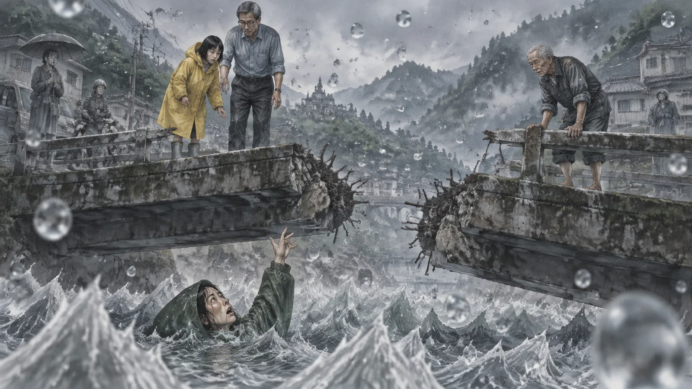
她在看阿禾。
十幾年。她一直在看阿禾。
邱望回頭看阿禾。阿禾站在橋上，站在她媽媽指的那個位置，看著下面。她的臉沒有表情。這是她看了幾千次的畫面。
「妳每天來。」他說。
阿禾點點頭。
「妳每天站在這裡。」
點頭。
「她每天看妳。」
阿禾沒有點頭。她拿出手機。
「一開始我覺得她在看我。」她打，「後來我覺得她在等我做什麼。再後來我覺得，她只是看著。她什麼都不想。她停在那裡。」
她停了一下。
「可是有時候，我覺得她在說一句話。嘴巴的形狀。我會讀唇語。」
「什麼話？」
阿禾看著下面，看了很久。
「跑。」她打。
她把手機收起來。她站在橋上，看著她媽媽。邱望站在旁邊，沒有說話。溪水停著，浪頭白白的。天是灰的。
他忽然想到一件事。阿禾說她的世界是二〇〇九年。可是這座橋、這條溪、這個鎮——是二〇二四年的。他的三點十七分和她的三點十七分，不是同一個。可是他們在同一個地方。
「阿禾，」他說，「這座橋，在我的時間裡，早就修好了。」
阿禾看著他。
「二〇〇九年斷的，二〇一一年修好的。我來的時候，它是一座新的橋。」他說，「可是現在它是斷的。」
阿禾想了很久。然後她打字。
「因為我在這裡。」她打，「我在哪裡，我的三點十七分就在哪裡。你在哪裡，你的就在哪裡。我們在一起的時候，兩個疊在一起。」
「所以我看到的，是妳的橋。」
「你看到的是我的橋，我的媽媽。」阿禾打，「我看到的是你的貨車，你的太太。我們都看到對方的三點十七分。」
她抬起頭。
「阿公說，這就是為什麼我們會遇到。一個人停在這裡，看不到自己。要有另一個人，才看得到。」
邱望看著橋下的女人。臉朝上，眼睛睜開，一隻手指著橋上，嘴巴的形狀是一個字。
跑。
他想起曉芸的臉。平靜的，還沒來得及怕的。他想，如果她也在說一句話，會是什麼？
他不知道。可是他覺得，大概不是「留下來」。
第十四章阿禾
「妳呢？」他問。
阿禾坐在石頭上，很久沒有動。
「妳媽媽在橋下面。」邱望說，「她的眼睛是睜開的。她在看妳。」
阿禾點點頭。
「妳說只要妳在這裡，她就還沒有死。」邱望說，「可是她也沒有活。她在水裡，十幾年。她看著妳，十幾年。她看到的是什麼？是一個十二歲的女孩，站在斷掉的橋上，回頭看她。她十幾年都在看這個。」
阿禾的眼淚流下來。
「她叫妳先跑。」邱望說，「她把妳放下來，叫妳先跑。她要妳走。」
阿禾拿起手機，打字，打得很慢。
「我怕。」
「我知道。」
「我怕我一走，就什麼都沒有了。她沒有了，這裡沒有了，我十二歲的那個世界也沒有了。我不知道三點十八分是什麼。」
邱望蹲下來，跟她一樣高。
「我也不知道。」他說，「可是老魏說，讓它發生的時候，不是你一個人動。是那個人也動了。」
他指了指山下，指了指她媽媽在的那條溪的方向。
「妳媽媽在水裡等妳。不是等妳救她。是等妳走。她走不了，因為妳還站在橋上回頭看。妳一走，她才能走。」
阿禾哭了很久。
然後她站起來，把黃色的雨衣穿好，把手機還給邱望。
「我去了。」她用手比。她的手語他看不懂，可是他懂。
「妳會回到哪裡？」他打字。
阿禾想了一下。
「二〇〇九年八月八日，三點十八分。」她打，「一座斷掉的橋上。我十二歲。」
她停了一下。
「然後我會長大。」
第十五章開始
阿禾走的時候，邱望在旁邊。
她走到那條溪——不是老魏的溪，是另一條，往鎮的北邊走兩公里，那裡有一座斷掉的橋，橋下面有一個女人，臉朝上，眼睛睜開，在水裡。
阿禾站在橋上，站在她十幾年前站的地方。她往下看。
然後她做了一件邱望沒有想到的事。她轉過身，背對著溪，面對著山上的路——她媽媽叫她跑的方向。
她開始跑。
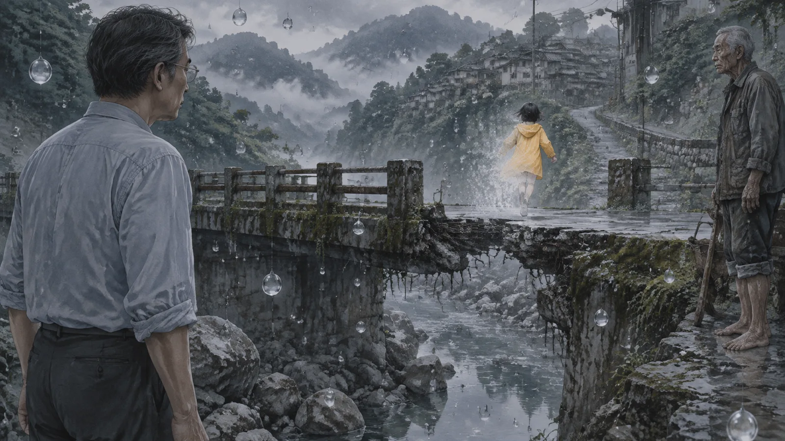
三步。她跑了三步，然後——她不在了。橋上什麼都沒有。
邱望往橋下看。水裡的女人，臉朝上，眼睛睜開。然後——很慢，很慢——她的眼睛閉上了。她的臉轉向一邊。她沉下去。
水面平了。
邱望站在橋上，很久。
然後他往山路走。
✦
他走了十二公里。走得很慢。他經過學校，經過操場上那顆懸在空中的籃球，經過主街上的阿榮和阿嬌和那個拿冰棒的小孩。他經過農會，曉芸的空位子。他經過一台一台停在路上的車。
他走到那個彎道。
曉芸在車裡，手在方向盤上，臉是平靜的。貨車在三十公尺外，輪子斜著。
他在她的車旁邊站好。三公尺。駕駛座的那一側。他算過：貨車撞上來的時候，車會往左推，他站在右邊，會被推開，可是不會被壓到。他會摔倒。他會在三秒內爬起來。
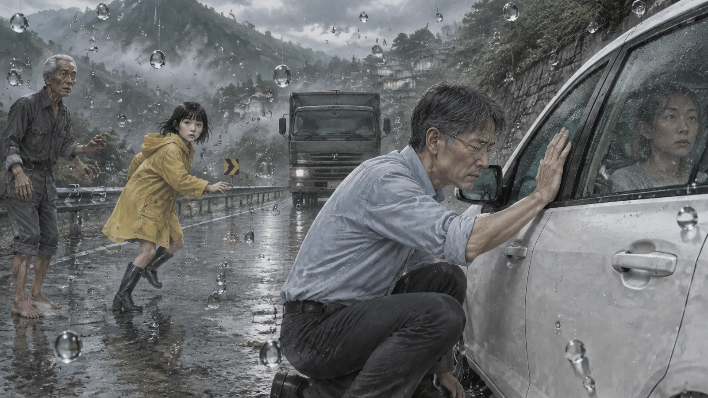
他蹲下來，把手放在車窗上。
「曉芸，」他說，「我在這裡。」
然後他做了老魏做的事，阿禾做的事。他閉上眼睛。他讓它發生。
第十六章三點十八分
聲音先回來。
鳥叫。雨。引擎。輪胎在濕的路面上打滑的聲音，尖的，長的。喇叭。
然後是撞擊。
他被推開了。像他算的一樣。他摔在路邊，肩膀撞到護欄，很痛。他聽到金屬被壓扁的聲音，聽到玻璃碎掉，聽到曉芸的車被推出彎道、滑下坡的聲音。
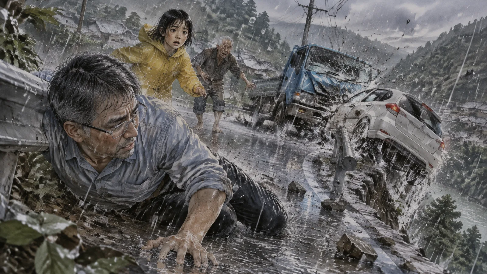
他爬起來。
三秒。他跑到坡邊，往下看。車翻了，四輪朝天，在坡的一半，卡在一棵樹上。沒有掉進溪裡。樹擋住了。
他滑下去。
他不記得怎麼滑下去的。他只記得他在車旁邊，車是倒的，他從破掉的窗戶看進去。曉芸在裡面，倒吊著，安全帶扣著她。她的頭上有血。她的眼睛閉著。
「曉芸。」
他伸手進去，摸她的脖子。有脈搏。很快，可是有。
「曉芸，我在這裡。」
她的眼睛動了一下。
他解開安全帶——這一次解開了，它沒有扣回去。他把她從窗戶拉出來，很小心，他知道不能亂動脊椎，可是車在漏油，他聞到了。他把她拉到十公尺外的草地上，讓她平躺。
他拿出手機。有訊號了。他打了一一九。
「石岡坪，山路七公里，彎道，車禍，一個人，有意識，頭部外傷。」他的聲音很穩。他不知道為什麼這麼穩。「我在她旁邊。快。」
他掛掉電話，蹲在曉芸旁邊。她的眼睛半開著，看著他。
「阿望？」她說，很小聲。
「我在。」
「你怎麼會在這裡？」
他不知道怎麼回答。他握著她的手。
「我來接妳。」他說。
✦
救護車二十分鐘後到。
醫生說，如果晚十分鐘，她會失血過多。他們說她很幸運，車卡在樹上沒有掉進溪裡，更幸運的是有人在旁邊，第一時間把她拉出來——車在救護車到之前五分鐘燒起來了。
貨車司機沒事。他在筆錄裡說，他看到一個人站在那台白色小車旁邊，撞上去之前就在那裡，他不知道那個人是從哪裡來的。警察問邱望，他說他剛好路過。
沒有人再問。
曉芸在醫院住了三個星期。頭部外傷，三根肋骨斷了，左手骨折。她會好。醫生說她會完全好。
邱望每天去醫院。他坐在她旁邊，跟她講話。這次她會回答。
尾聲
一年後，邱望在物理課上講等速圓周運動。
他在黑板上畫了一個圓，畫到四分之三的時候，停下來。他看著窗外。窗外有一隻麻雀，飛過去，翅膀在動。
「老師？」一個學生說。
「沒事。」他說。他把圓畫完。
他沒有跟任何人講那件事。曉芸問過他一次，問他那天為什麼會在山路上。他說他請了假，想去接她。她看著他，看了很久，說：「你從來不請假的。」他說：「那天想請。」她沒有再問。
他去找過阿禾。
不是找一個十二歲的女孩——他去查了。二〇〇九年八月八日，苗栗山區的一個村子，一座橋斷了，一個女人被沖走，她十二歲的女兒活下來了。女兒後來被親戚收養，去了台中。他找到她的名字。她今年二十七歲，在一間學校教書，教聽障的孩子。
他沒有去見她。他只是知道她長大了。這樣就夠了。
他也去了老魏的那條溪。一九七五年，一個八歲的男孩溺水。他的父親活到八十四歲，在二〇二三年過世。鄰居說老人晚年很安靜，每天去溪邊坐一會兒，不講話，可是不像在難過，「像在陪誰」。
邱望坐在溪邊，坐了一會兒。水很清，很淺，什麼都沒有。
他想，他們都回到三點十八分了。有的人回去得早，有的人回去得晚。可是都回去了。
他站起來，回家。
曉芸在後院種菜。地瓜葉又長太多了。她看到他，說：「你回來了。」
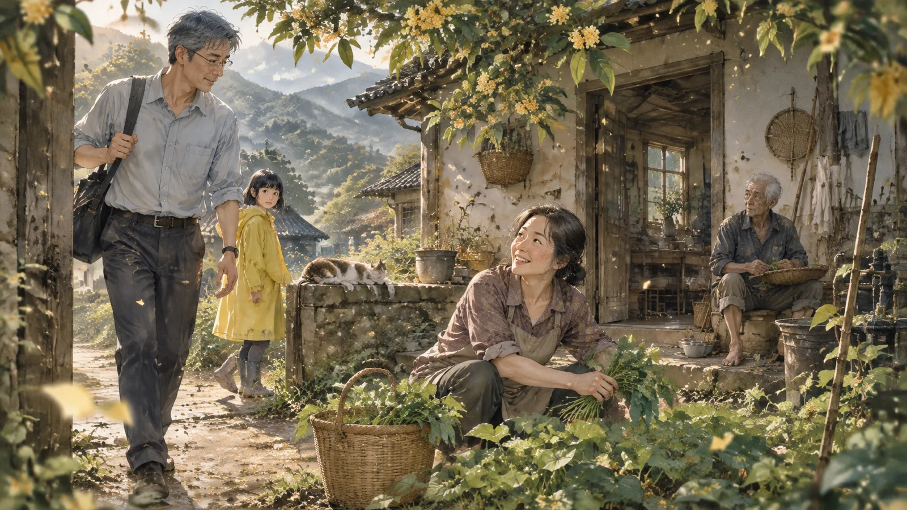
「嗯。」他說。
三點十八分。三點十九分。三點二十分。
時間在動。
（完）
留言板
看不懂、想補充、發現錯誤都歡迎留言；填個暱稱就能發。